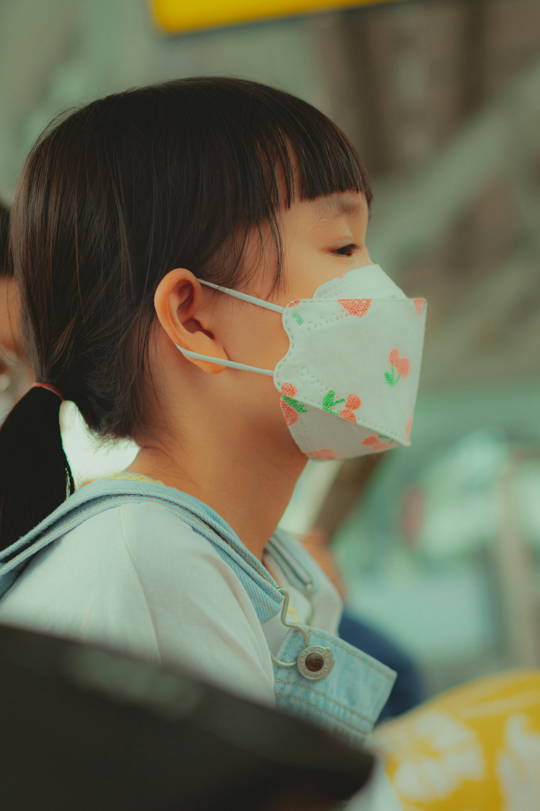

Conseils et actualités
Découvrez des articles pour accompagner la santé et le bien‑être de vos enfants.

Rentrée scolaire : conseils pour une transition en douceur
Préparez la rentrée de vos enfants avec ces recommandations : bilan de santé, choix des fournitures, routines et accompagnement.
Lire plus
L’exposition aux écrans : un danger réel pour la santé des enfants
Comprenez les effets des écrans sur le sommeil, la santé mentale, l’apprentissage et le développement social, et comment limiter l’exposition.
Lire plus

Protéger votre enfant pendant la pandémie de COVID‑19
Mesures d’hygiène, soutien émotionnel et recommandations officielles pour prendre soin de vos enfants pendant la pandémie.
Lire plus